8日目～スンダ海峡を越え、スマトラ島へ～
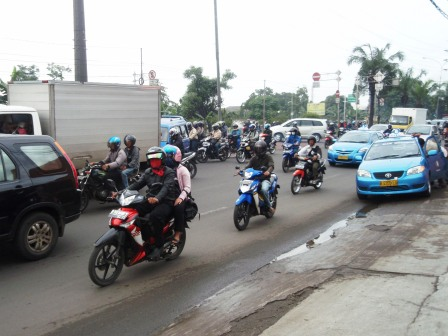
朝食前にホテル前の通りに出てみると、朝の大渋滞となっていた。日本と違って車よりもバイクが多く、車の間を縫うように我先にと走っている。圧倒される光景だった。
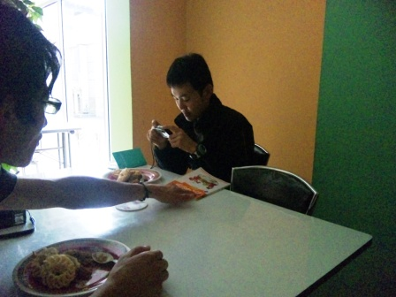
ここの宿は朝食付き。トーストなどの簡単なものを予想していたら、クルプッ付のナシゴレンだった。
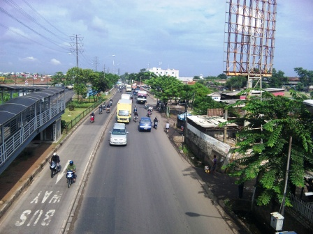
レンタカー会社の人が来るまではまだ時間があるので少し町を散策することに。付近にはごみが多く、異臭が漂っているところもあった。川もあったが、相当汚い。ごみがたくさん浮いていた。
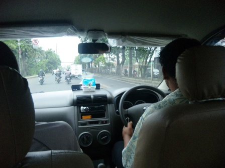
ホテルに戻るとレンタカー会社の人が来ており、最後の契約金6万円強を支払い、ダイハツXENIAとともに僕たちのスマトラへの旅が始まるはずだった。意気揚々と車に乗り込んで出発しようとすると、ラフな格好のおっさんが外で騒いでいる。会社の人も交えて話すと、彼はドライバーなのだという。これでは話が違う。運転手はいらないと言っても、折れてくれない。こちらとしては約2週間の間行動をともにするのはごめんなのに。おまけに彼の食費や宿泊費はどうしろと言うのだ。話を続けると、もうこれ以上彼にお金を支払うことはいっさいしなくていいから、彼を連れて行きなさいと言われた。そして、遠慮することなく僕たちのいきたいところへ行き、好きに旅を楽しみなさいとも。後にここで妥協してしまったことを相当後悔することになるのだが、僕たちはしぶしぶ運転手とともに行動することにした。
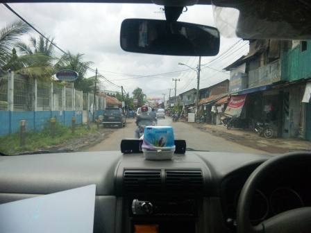
ホテルを出発後、車はよく分からない方面へ走り出した。不安になって聞いてみると、自宅によって着替えなどを取りに行くのだという。先に言ってほしかったが、これからの道のことを伝えようとしても運転手は英語がわからない。彼がわかる英語は、OKとMoneyだけだった。しかし、着替えを取りに行くって、彼は朝どこから来たのだろうか。自宅から来たのならそのときすべて持ってこればいいのに。
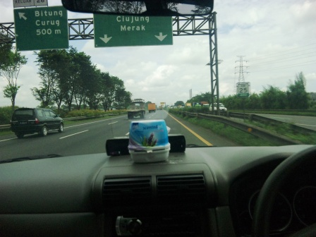
高速道路に乗り、ジャワ島の西端ムラッを目指す。運転手の運転は荒く、途中ヒヤッとする場面が何回もあった。
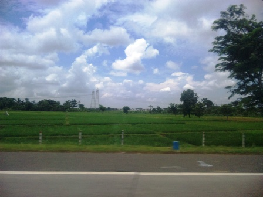
ジャカルタの市街地を抜けると、田園地帯が広がっていた。
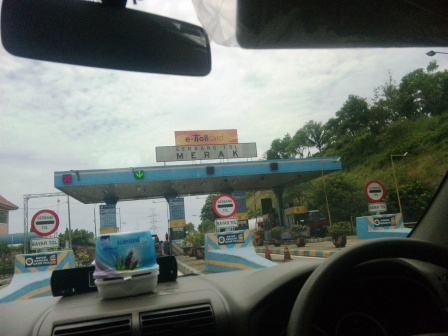
ムラッは高速道路の終点でもある。100kmは走ったのに、料金は300円強とかなり安め。
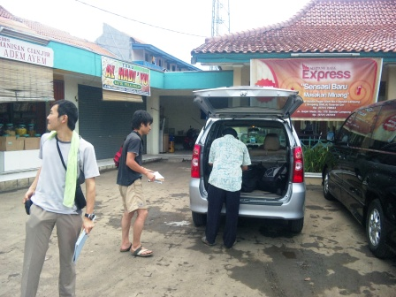
港に着いたところで昼食をとろうと思い、運転手に指さし会話帳を駆使してなにかいいお店はないかというと、近くにあったレストランに車を止めた。
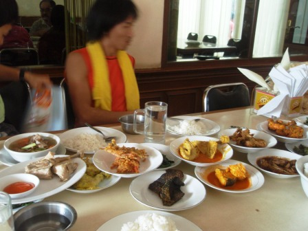
そのお店はパダン料理店だった。パダン料理とはスマトラ島のパダンというまちが発祥の料理で、席に着くと小皿に取り分けられた多くの料理が出てくるのだ。客はこのなかから好きな料理だけを食べ、食後に食べた分だけ料金を支払うという仕組み。したがって、多くの皿から少しずつつまみ食いするのではなく、一度手を付けた皿は完食したほうがよい。食後、明細を見ると普段の食費の3倍くらいに相当する2000円越えになっていることが分かった。高すぎる…。僕たちがあっけにとられていると、運転手はマニーマニーと言ってKENの財布から札を抜き取っていく。しかも、明細に書かれている額よりも多くを。なにをするんだこいつはと思い、彼の行動を制して店員にお金を渡すと額に不足はないようだった。運転手は、自分の食べた分の食費を払ってはくれなかった。このときから、僕たちと運転手との信頼関係は崩れていたのだと思う。
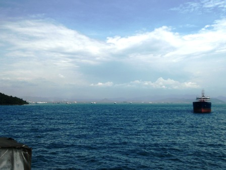
フェリーに車を積み、出航。遠くにはもうスマトラ島が見えている。
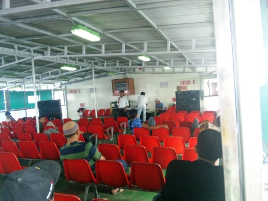
船の最上デッキではライブのようなものも行われていた。音量がすごい。
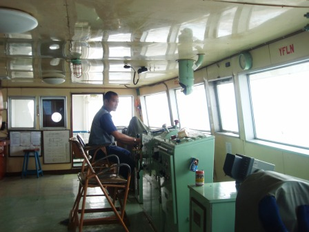
ライブ会場で隣に座っていたおじさんは、船の乗組員で、僕たちが日本人だとわかるとなんと操舵室に招待してくれた。操舵室の計器盤にも日本語の文字で書かれたものが多数あった。この船の造船は40年以上も前であったが、昔は日本で活躍していたのだろう。
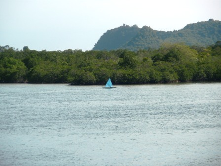
もうすぐスマトラ島である。バカウヘニ港の近くには小島が点在し、岸辺を双眼鏡で確認してみるとマングローブ海岸になっていた。
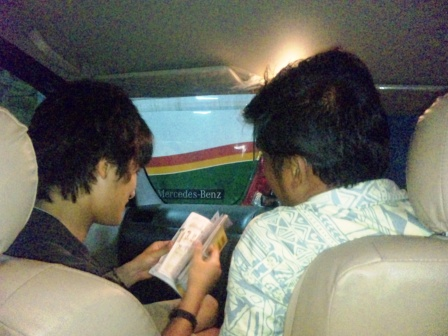
港に接岸してからフェリーのゲートが開くまで1時間以上も待たされた。まわりにはバスや大型トラックが多く、しかもエンジンをかけているため排気ガスの臭いがすごかった。この間、会話帳を駆使して運転手とコミュニケーションをとろうとした。今後の道などについても指示するつもりだったが、あまり聞く気はないようだった。
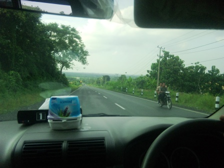
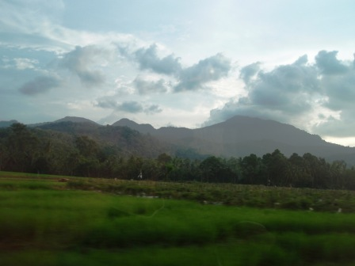
スマトラ島に上陸！！さっそく僕たちを出迎えてくれたのは見渡す限り広がるジャングルだった。1億人以上がひしめくジャワ島に隣接するこの地がここまで未開だったとは驚きだった。メインの道路は片側1車線で、舗装もあまりいいとは言えない。もちろん、高速道路もない。上陸したのは夕方だったのであまり走ることはできず、この日の宿泊予定地はバンダルランプンだったが若干手前のビントゥアンという町で宿泊することになった。見つけたロスメンは廃墟のような外観で、部屋を見せてもらったがクモの巣がはっていたり、恐ろしく汚い浴室兼トイレだったりと驚きの連続だった。驚きはまだまだ続く。あれほど追加料金はとらないといっていたのに、部屋を決めてさあ入ろうかという瞬間、運転手が俺の部屋はと叫びだした。僕たちはあっけにとられ、約束したじゃないかと主張したが運転手はゆずらない。またまた会話帳を駆使してやりとりを行う内、旅を続けたくないと言い出した。運転手と一緒に旅を続けたくないのは僕たちも同じだった。そもそも連れてきたくはなかったのだ。車は僕たちが運転するから、あなたはこのお金でジャカルタに帰りなさいと言っても承諾しない。宿の主人も加わって長い話し合いが行われ、旅を続けたい僕たちが折れる形で毎日9万ルピアを払うことでようやく合意に至った。運転手は金をつむことでしかいうことを聞かない。ここで僕たちが折れてしまったことで最悪のスパイラルが始まってしまうのだった。
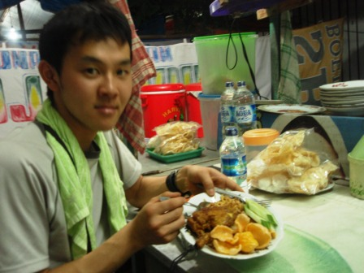
運転手との話し合いが終わって疲れ切った僕たちはあまり食欲はなかったが、近くの屋台にいき、フライドチキン付ナシゴレンを注文した。屋台の主人は歯がほとんど残っていない外見は少し不気味な老人だったが、とても気さくな人で英語も堪能だった。おかげで数の数え方など、インドネシア語も教えてもらうことができた。親切な人で、料理の会計もわかりやすく説明してくれた。先ほどの運転手との壮絶なバトルで傷ついた僕たちの心が癒えていくようだった。
翌日へ